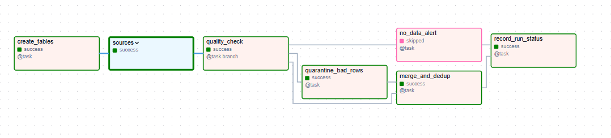
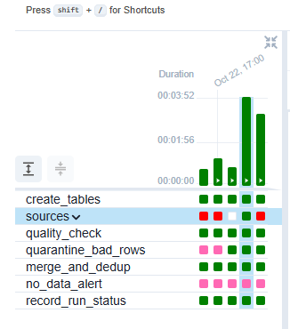
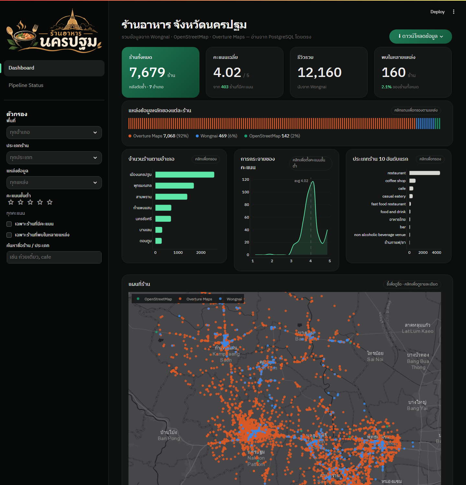
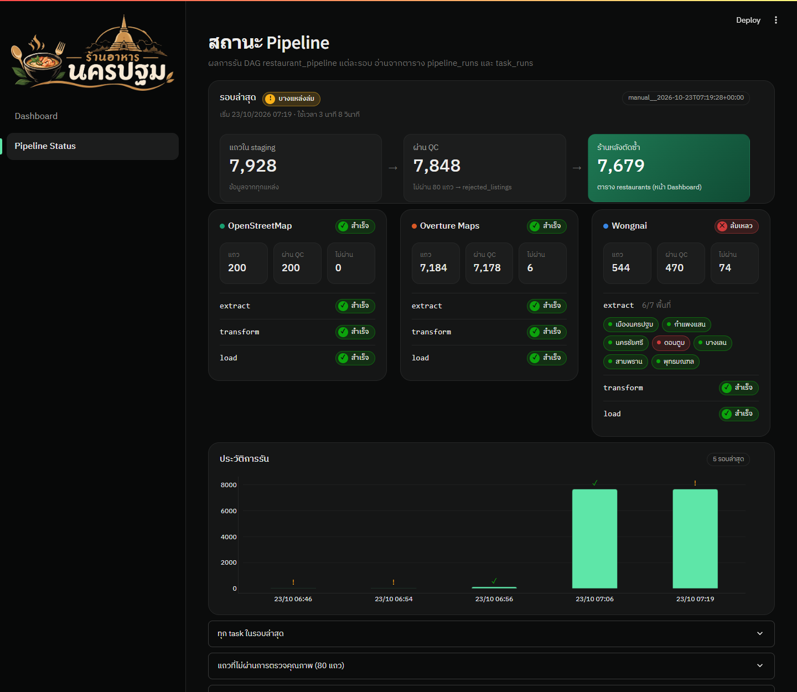

ขอบเขต: ร้านอาหารและคาเฟ่ใน จ.นครปฐม ครบ 7 อำเภอ · เก็บเฉพาะข้อมูลระดับร้าน (ไม่เก็บข้อความรีวิวหรือข้อมูลผู้ใช้ ตาม PDPA)
| # | แหล่งข้อมูล | วิธีดึง | ได้อะไร |
|---|---|---|---|
| 1 | Wongnai | Web scraping ด้วย requests + BeautifulSoup (ไม่ใช้ Selenium) อ่าน JSON ที่ฝังในหน้า · ตรวจ robots.txt ก่อนทุก request · เว้น 2 วินาที | ชื่อ ประเภท คะแนน จำนวนรีวิว ช่วงราคา พิกัด |
| 2 | OpenStreetMap | Overpass API (ไม่ต้องใช้ key) | ชื่อ ประเภทอาหาร พิกัด ที่อยู่ |
| 3 | Overture Maps Places | อ่าน GeoParquet บน S3 สาธารณะด้วย DuckDB กรองด้วย bbox + หมวด food_and_drink (ฟรี ไม่ต้องใช้ key) | ชื่อ ประเภท พิกัด ที่อยู่ เว็บไซต์ |
| ระดับ | สิ่งที่ทำ | สถานะ |
|---|---|---|
| 1 | DAG restaurant_pipeline: extract → transform → load → PostgreSQL → เว็บ Streamlit มีตารางและกราฟ | ✓ ผ่าน |
| 2 | 3 แหล่งรันขนานกันใน TaskGroup sources · แปลงเป็น schema เดียว (13 ฟิลด์) · INSERT … ON CONFLICT (source, source_id) DO UPDATE รันซ้ำแล้วจำนวนแถวไม่เพิ่ม · เว็บมี KPI 4 การ์ดและตัวกรอง (อำเภอ ประเภท แหล่ง คะแนนดาว คำค้น) | ✓ ผ่าน |
| 3 | trigger_rule=all_done ทำให้รวมข้อมูลต่อได้แม้บางแหล่งล่ม (รอบล่าสุด Wongnai อ.ดอนตูม ล้ม → สถานะ partial แต่ยังรวมข้อมูลได้) · ตัดรายการซ้ำข้ามแหล่งด้วยชื่อคล้ายกัน ≥ 85% (rapidfuzz) + ห่างกัน ≤ 150 ม. · ตรวจคุณภาพแล้วแตกเส้นทางด้วย @task.branch → แถวไม่ผ่านไป rejected_listings | ✓ ผ่าน |
| โบนัส | Dynamic Task Mapping (extract.expand(area=AREAS) 7 อำเภอ) และหน้า Pipeline Status บนเว็บ | ✓ ทั้งคู่ |
ผลรอบล่าสุด: staging 7,928 แถว → ผ่าน QC 7,848 (ไม่ผ่าน 80 เช่น ร้านโฆษณานอกพื้นที่) → 7,679 ร้านหลังตัดซ้ำ (พบในหลายแหล่ง 160 ร้าน) — เกินข้อกำหนด 100 รายการ




sources.wongnai.extract ล้มทุกพื้นที่ด้วย RobotsDisallowed ข้อมูลทั้งระบบเหลือ 14 ร้าน (ต่ำกว่า 100)/users/ → ทดสอบใน container พบว่า robotparser.read() ใช้ User-Agent ของ urllib แล้วเว็บตอบ 403 ซึ่ง robotparser ตีความว่า "ห้ามทุกหน้า"rp.parse() เอง (ยังเคารพ robots.txt เหมือนเดิม)
window._wn = {…} ไม่ใช่ __NEXT_DATA__ ที่เตรียมไว้ · ค้นคีย์ที่เกี่ยวกับหน้าใน state พบว่าเว็บใช้ page.number ไม่ใช่ pagewindow._wn ด้วย json.JSONDecoder().raw_decode และเปลี่ยน URL เป็น page.number → ได้ ~10 ร้านใหม่ต่อหน้า
wongnai.load ล้มทุกครั้ง(source, source_id) ซ้ำกันใน INSERT คำสั่งเดียวหลักที่ใช้: ทำให้ ส่วนที่มีคะแนน (pipeline ระดับ 1–3) ทำงานครบและ push ขึ้น GitHub ก่อน แล้วค่อยขยายขอบเขตและแต่งเว็บ — commit ทุกช่วงที่ระบบใช้ได้ เพื่อไม่ให้งานที่ทำแล้วเสี่ยงหายหากหมดเวลา
| เวลา | งาน | commit |
|---|---|---|
| ก่อนสอบ | เตรียมโครง DAG, schema, ตัดซ้ำ, หน้าเว็บ และ docker-compose ไว้ (ส่วนที่ต้องดูหน้าเว็บจริงทำเป็น TODO วันสอบ) | – |
| 13:00–13:50 | จองหัวข้อ เปิดระบบ รัน DAG รอบแรก → พบว่า Wongnai ล้ม ได้แค่ 14 ร้าน | – |
| 13:50–14:00 | แก้ปัญหาที่ 1–3 จนได้ 127 ร้าน (ผ่านขั้นต่ำ 100) → สร้าง repo และ push ทันที | 14:00 |
| 14:00–14:11 | ขยายเป็นทั้งจังหวัด 7 อำเภอ · เปลี่ยน Google Places เป็น Overture Maps → 7,679 ร้าน | 14:11 |
| 14:11–15:26 | ปรับหน้าเว็บ: ธีม, แผนที่ (hover/คลิก/ล็อกขอบเขต/แผงรายละเอียด), ตัวกรอง, ดาวน์โหลด CSV/Excel/SQL, หน้า Pipeline Status | 14:23, 14:29, 15:16, 15:26 |
| 15:26–16:00 | เขียนสรุป PDF นี้ · ตรวจ repo | – |
การอ่าน log ของแต่ละ task ใน Airflow ช่วยหาสาเหตุได้เร็วกว่าการเดา · การ commit ทันทีที่ระบบผ่านขั้นต่ำช่วยลดความเสี่ยงเรื่องเวลา · trigger_rule=all_done ทำให้เห็นผลจริงตอนแหล่งหนึ่งล่ม (รอบล่าสุดสถานะ partial แต่ dashboard ยังมีข้อมูลครบจากแหล่งที่เหลือ)